Track a two-handed prop while the camera moves, mount a textured 3D blaster on it, and inpaint the tracking balls.
9 illustrated stagesThree lessonsObject tracking · 3D model · PBR textures · InpaintPractice plate: Hollywood Camera Work
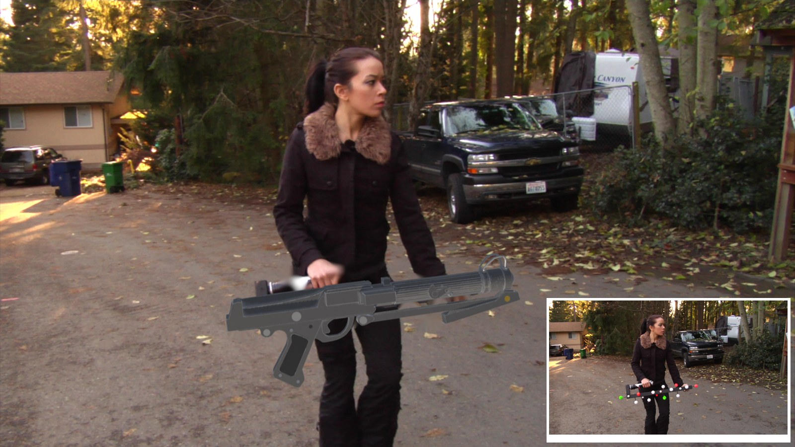
The demo shot, made in Blender with this tutorial’s steps. Plate: Hollywood Camera Work “Blaster Walk”. Model: DC-15S (Sketchfab).
Track. Mount. Inpaint.
Object tracking with a moving camera, a textured model, and inpainting when there is no clean plate. Do Laser Sword first.
My supports
Turn on any help you want. Your teacher may have set some for you. They change how the guide helps, not what is assessed.
Shot brief
Put a blaster in her hands.
The plate shows an actor walking with a two-handed tracking prop. Deliver the same shot with a 3D blaster locked to the prop, the tracking balls hidden, and a change of the director’s choosing.
You will hand in
A solve under 1 px (screenshot of the solve error)
The finished shot as an MP4
The director’s change, with a three-sentence explanation
Credits for the plate and the method
Footage and credits
The plate is from Hollywood Camera Work. You may use it and post your results with credit, but do not re-upload the plate itself. The method follows Kenan Proffitt’s tutorial.
Replacing a tracked prop with CG is everyday VFX work: weapons, phones, creatures on sticks. A matchmove artist tracks the prop, a CG artist builds and lights the replacement, and a compositor removes the original and blends the new one in. You do all three here.
Knowledge first
Why this works.
Rigid objects and tracking balls
A rigid prop keeps its shape, so the distances between its markers never change. Balls pointing in different directions show the solver how the prop turns in depth.
Identity matters
Each marker must stay on its own ball. A marker that jumps to a neighbour tells the solver the prop changed shape, and the 3D result collapses.
Moving camera, no clean plate
An object solve is relative to the camera, so it works even when the camera moves. But a moving camera means no clean plate, so small leftovers are inpainted and large ones need roto.
Design principles in the shot
Unity: the model’s light and colour match the plate. Proportion: the blaster is the right size for her hands. Movement: motion blur matches her walk.
Primary achievement evidence: the director’s change (step 9). Guided steps and supports are recorded separately from achievement. Shot-library option in sprint mm12-26-s08. The registry has no VFX skill IDs yet; see the animation skills proposal.
Session A · Lesson 1 · VFX shot library
Track the prop while the camera moves.
An actor walks towards a moving camera carrying a bar covered in tracking balls. You will track the bar in 3D and hang a blaster on it.
TODAYWatch and plan (15 min), tracking object and markers (25 min), track the whole shot (25 min).
01
Study the plate and plan the shot
Start here: read or listen to the theory deck (about 10 minutes, with checkpoint questions), then come back.
IN SHORTWatch the demo; download the plate; note that camera and prop both move; plan the blaster’s position.
READ ALOUD
DOCUMENT: Kenan Proffitt’s tutorial · the Blaster Walk plate SELECT: The two-handed prop TOOLS / ROUTE: Watch · download · look closely
Play the demo shot (below). If you have not done Laser Sword, watch Kenan Proffitt’s 8-minute object-tracking tutorial first.
Download the Blaster Walk plate from Hollywood Camera Work (link in Sources) and unzip it into your project folder.
Scrub the frames. Here the camera moves and the prop moves. Object tracking does not care: it finds the prop’s motion relative to the camera.
Look at the prop: a black bar held in two hands, with balls on rods above and below it.
Decide where a blaster would sit: along the bar, between her hands.
1–2 · Track and solve
Markers on the prop, then Solve Object Motion.
3 · Model and render
A textured model that follows the solve; transparent film; motion blur.
4–5 · Composite
Inpaint the tracking balls, put the model over the plate.
The demo shot (real Blender render, 10 seconds). Plate: Hollywood Camera Work.
Object tracking: Working out how one object moved in 3D from video
Relative motion: How one thing moves as seen from another
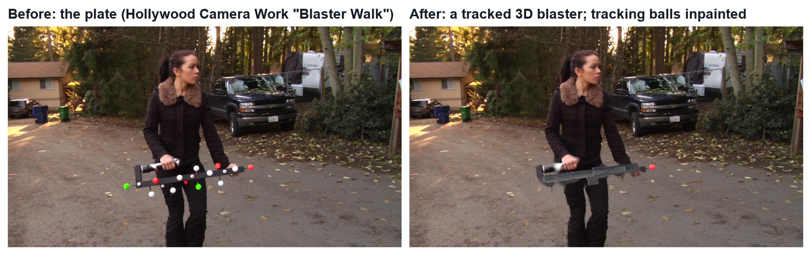
Real frames: the plate, and the same frame with a tracked 3D blaster.
WHYAn object solve gives the prop’s position and rotation as seen from the camera. That is all you need to render a model over the plate, even when the camera is moving.
CHECKThe plate in your project folder and a sketch of where the blaster sits on the bar.
FIXPlate won’t download at school? Ask your teacher for the class copy.
WORKED EXAMPLE · DIFFERENT OBJECTThe demo plate is 232 frames, 1280 × 1080 with pixel aspect 1.5.
STRETCH (AFTER THE CHECK PASSES)Choose your own model on Sketchfab and note its licence.
Method basis: K1 · H1. Values and sequence are authored for this project.
02
Make a tracking object and put markers on the balls
DOCUMENT: Blaster_YourName.blend · the plate SELECT: Movie Clip Editor, a tracking object called Blaster TOOLS / ROUTE: Motion Tracking workspace · Track › Objects › + · Ctrl+click
New file. Add the Motion Tracking workspace, open the first plate image, click Set Scene Frames and Prefetch. Set Pixel Aspect to 1.5.
Sidebar › Track › Objects: click + and rename the object Blaster. Keep it selected.
Tracking Settings: Pattern Size about 21, Search Size about 180, Motion Model Location, Prepass and Normalize on.
Go to a frame where the bar is side-on (about frame 150). Ctrl+click a marker on each ball: at least 8, above and below the bar.
Do not put markers on her hands, her jacket or the ground: only on the prop.
Click by click (real Blender screenshots)
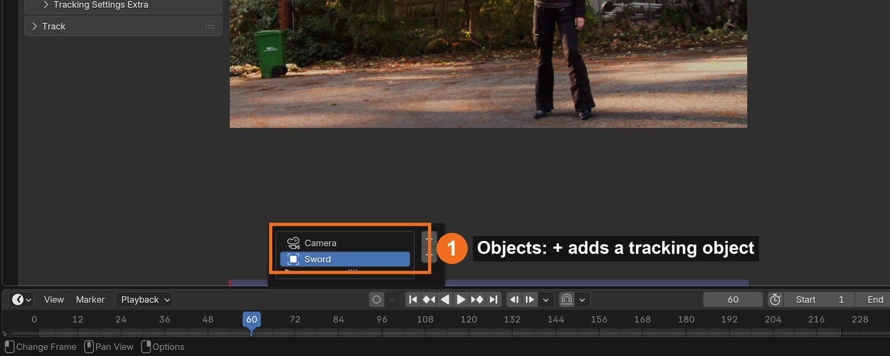
Sidebar › Track › Objects (captured on the Laser Sword file): select your tracking object before adding markers.
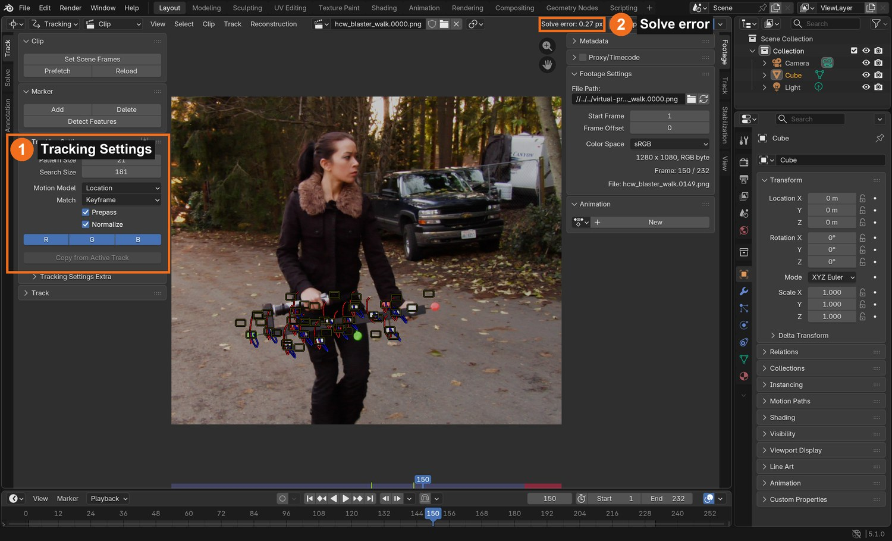
The Clip Editor with the demo’s markers on the prop: Tracking Settings (1) and the solve error (2).
STEP CHECKLIST
GLOSSARY
Tracking object: A named group of markers that Blender solves as one moving object
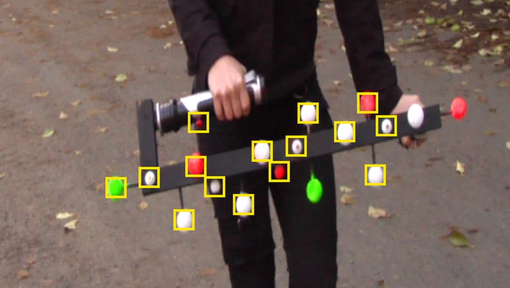
Markers on the balls in the demo at frame 150. Balls above and below the bar give the solver depth.
WHYOnly markers on the rigid prop belong in this solve. Anything else moves differently and breaks it.
CHECKA tracking object called Blaster with at least 8 markers, all on balls.
FIXMarkers appear under Camera? Select Blaster in the Objects list, then add them again.
WORKED EXAMPLE · DIFFERENT OBJECTThe demo tracked about 12 balls at a time.
STRETCH (AFTER THE CHECK PASSES)Add markers on the two silver handles too.
Method basis: K1 · B1. Values and sequence are authored for this project.
03
Track through the shot, both directions
IN SHORTTrack forward; track backward; step through hard frames; end markers on hidden balls; 8+ per frame.
READ ALOUD
DOCUMENT: Blaster_YourName.blend SELECT: All Blaster markers TOOLS / ROUTE: Ctrl+T forward · Shift+Ctrl+T backward · Alt+→ / Alt+← one frame · G to fix
From your start frame, select all markers and press Ctrl+T to track forward to the end.
Go back to the start frame and press Shift+Ctrl+T to track backward to frame 1.
Near the start she is far away and the balls are small. Step one frame at a time there and fix slips with G.
When the bar turns end-on (about frames 60–110) balls overlap. Let those markers end and add new ones after.
Finish with at least 8 markers on every frame, each on its own ball.
What went wrong when we built the demo: our ball finder lost the prop for the first 62 frames because it started searching in the wrong place. Starting from a frame where the prop was clear and working backward recovered every frame.
STEP CHECKLIST
GLOSSARY
Track backward: Following a marker towards the start of the clip
WHYStarting where the prop is clearest and tracking outward in both directions gives the longest, cleanest tracks.
CHECKTracks from frame 1 to the end, 8 or more at any frame.
FIXMarkers swap between white balls? Go back to the last good frame, fix with G, and step frame by frame.
WORKED EXAMPLE · DIFFERENT OBJECTIn the demo the prop was hardest to find in the first 60 frames, where it is smallest.
STRETCH (AFTER THE CHECK PASSES)Lock finished tracks with Ctrl+L.
Method basis: K1 · B1. Values and sequence are authored for this project.
Session B · Lesson 2 · VFX shot library
Solve it. Mount the blaster.
Turn the tracks into 3D motion, then attach a real 3D model.
TODAYSolve under 1 px (20 min), scene and constraint (20 min), import, line up and light the model (25 min).
04
Solve the object motion to under 1 pixel
Recall first (from last lesson, no peeking):
Why does an object track still work when the camera is moving?
What makes a marker “slip”, and how do you fix it?
Which object must be selected in the Objects panel before you add markers?
Say or write your answers, then check them against your file.
IN SHORTBlaster active; keyframes with clear rotation; solve; clean; under 1 px.
READ ALOUD
DOCUMENT: Blaster_YourName.blend SELECT: Solve tab, with Blaster active TOOLS / ROUTE: Solve › Keyframe A / B · Solve Object Motion · Clean Up
With Blaster selected in Objects, open the Solve tab: the button reads Solve Object Motion.
Turn off automatic Keyframe selection. Choose Keyframe A and B where the bar has clearly turned between them (the demo used 160 and 185).
Click Solve Object Motion and read the Solve error.
Above 1 px? Use Clean Up › Clean Tracks to find the worst tracks; fix or delete them and solve again.
Try other focal lengths under Track › Camera if needed (the demo solved best at 32 mm).
Click by click (real Blender screenshots)
Solve tab › Clean Up: set Error, choose Select, and click Clean Tracks to find the worst tracks.
STEP CHECKLIST
GLOSSARY
Solve error: Average tracking error in pixels; lower is better
The Solve panel with a tracking object active (captured on the Laser Sword file): keyframes A and B (2), Solve Object Motion (3).
WHYThe two keyframes must show the prop from clearly different angles; that difference reveals its 3D shape.
CHECKA solve error under 1.0 px.
FIXError huge? A marker is on the wrong ball: check the track with the biggest error.
WORKED EXAMPLE · DIFFERENT OBJECTThe demo solved at 0.27 px.
STRETCH (AFTER THE CHECK PASSES)Record the error for three focal lengths.
Method basis: B3 · K1. Values and sequence are authored for this project.
05
Set up the scene and line a stand-in up with the bar
IN SHORTSetup Tracking Scene; Empty + Object Solver; stand-in cylinder on the bar; parent; play.
READ ALOUD
DOCUMENT: Blaster_YourName.blend SELECT: A camera, an Empty with an Object Solver constraint, a stand-in cylinder TOOLS / ROUTE: Scene Setup · Add › Empty · Object Constraints › Object Solver
Solve tab › Scene Setup: Set as Background, then Setup Tracking Scene. Delete the test cube and ground.
Add › Empty. In Object Constraint properties add Object Solver. Set Object to Blaster and Camera to the scene camera.
Add a thin cylinder as a stand-in. In camera view, line it up exactly with the black bar and the marker dots. Parent it to the Empty.
Press Spacebar: the stand-in should stay on the bar for the whole walk.
If it drifts in places, the solve is weak there: return to tracking and fix those frames.
Click by click (real Blender screenshots)
Solve tab › Scene Setup: Set as Background, then Setup Tracking Scene.
STEP CHECKLIST
GLOSSARY
Object Solver: The constraint that makes an object follow a solved tracking object
Stand-in: A simple shape used to test before the real model
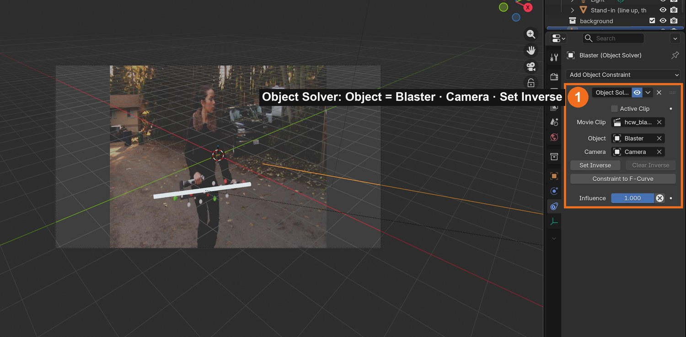
Real screenshot: the Object Solver constraint (Object = Blaster) and a white stand-in cylinder lined up with the bar in camera view.
WHYA simple stand-in proves the track before you spend time on the model. If a cylinder sticks, the blaster will too.
CHECKA stand-in that stays on the bar through the whole shot.
FIXStand-in flies off? Click Set Inverse on the constraint and reposition it.
WORKED EXAMPLE · DIFFERENT OBJECTThe demo stand-in runs the full length of the bar.
STRETCH (AFTER THE CHECK PASSES)Colour the stand-in bright so slips are easy to see.
Method basis: B2 · K1. Values and sequence are authored for this project.
06
Import the blaster, line it up and light it
IN SHORTImport; line up on the stand-in; parent; texture maps; sun and sky; transparent film; render.
READ ALOUD
DOCUMENT: Your blaster model (FBX, glTF or .blend) and its textures SELECT: The model, parented to the Empty TOOLS / ROUTE: File › Import › FBX · S / R / G · Material: Image Texture nodes · Sun light
File › Import › FBX (or glTF), or File › Append for a .blend. Keep the model’s licence text.
Scale and rotate the model so it lies along the stand-in, between her hands, with the grip pointing down. Parent it to the Empty, then hide the stand-in.
Shading workspace: connect the model’s Base Color, Metallic, Roughness and Normal maps to the Principled BSDF (Normal through a Normal Map node; all but colour set to Non-Color).
Add a Sun from the direction of the plate’s light (low, behind her, warm) and set the World to a soft sky colour.
Render properties: Film › Transparent and Motion Blur on. Render the blaster as a PNG RGBA sequence.
Click by click (real Blender screenshots)
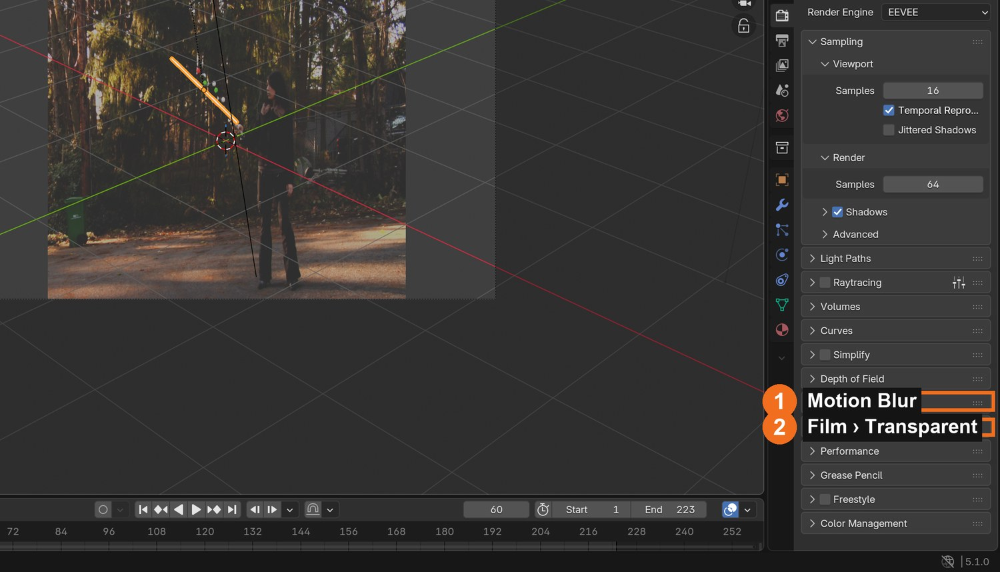
Render properties (captured on the Laser Sword file): Motion Blur (1) and Film › Transparent (2).
What went wrong when we built the demo: our first render had the blaster upside down, and it looked like grey plastic because a fully metallic surface had nothing to reflect.
STEP CHECKLIST
GLOSSARY
PBR maps: Texture images for colour, metal, roughness and bumps
HDRI: A 360° photo used to light and reflect in a 3D scene
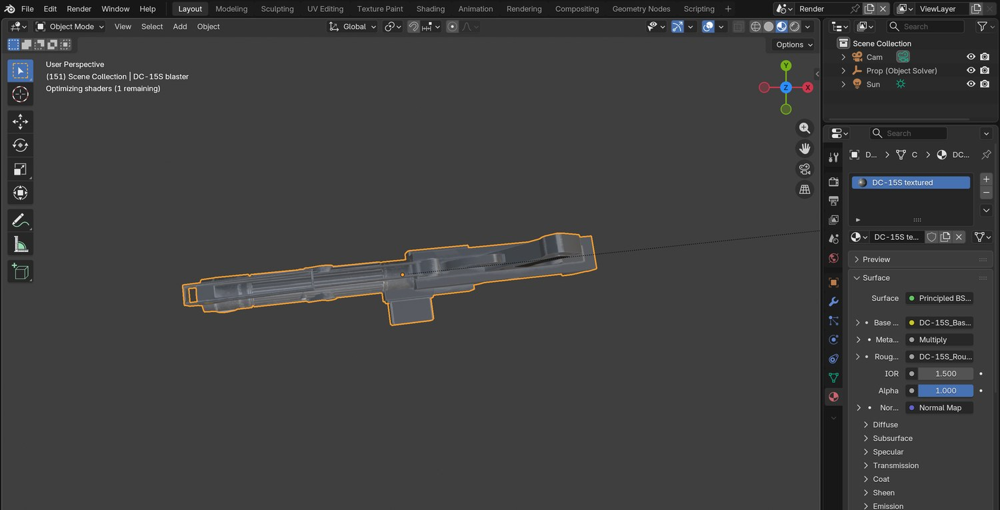
Real screenshot: the DC-15S model in the demo, with its texture maps connected in the material (1).
WHYA model only looks like it belongs when its size, its surface and its light match the plate.
CHECKA textured blaster that follows the bar, lit from the plate’s light direction, rendered with a transparent background.
FIXModel looks like flat grey metal? There is nothing for metal to reflect: lower Metallic, or add an HDRI. Model upside down? Rotate it 180° on its long axis.
WORKED EXAMPLE · DIFFERENT OBJECTThe demo scales the blaster to 84 % of the bar length and multiplies Metallic by 0.35.
STRETCH (AFTER THE CHECK PASSES)Use an HDRI of a forest road for reflections.
Method basis: A1 · K1. Values and sequence are authored for this project.
Session C · Lesson 3 · VFX shot library
Hide the balls. Composite. Deliver the change.
The camera moves, so there is no clean plate. You will inpaint the leftover tracking balls instead.
TODAYMatte and inpaint (25 min), composite and check (15 min), director’s change and render (25 min).
07
Make a ball matte and inpaint the leftovers
Recall first (from last lesson, no peeking):
What solve error is good enough?
How did you get the blaster the right size for her hands?
Why is there no clean plate for this shot?
Say or write your answers, then check them against your file.
IN SHORTSpheres on the markers; matte pass; dilate; Set Alpha holes; Inpaint.
READ ALOUD
DOCUMENT: Blaster_YourName.blend · Compositing SELECT: A matte of the balls; the plate TOOLS / ROUTE: Spheres on the solved markers · Dilate/Erode · Set Alpha · Inpaint
In the 3D scene add a small white emission sphere on each solved marker dot and parent them to the Empty. Render them alone as a second RGBA pass: the matte.
Compositing workspace: add the plate and the matte pass.
Grow the matte a few pixels with a Dilate/Erode node. Subtract it from 1 with a Math node.
Use Set Alpha (Replace Alpha) to cut holes in the plate where the balls are, then an Inpaint node (Size about 150) to fill the holes from the surrounding pixels.
Check with a Viewer. Balls over the ground vanish well; balls in front of her legs leave soft smears.
STEP CHECKLIST
GLOSSARY
Inpaint: Filling a hole in an image from the pixels around it
Matte: A black-and-white image that says where to act
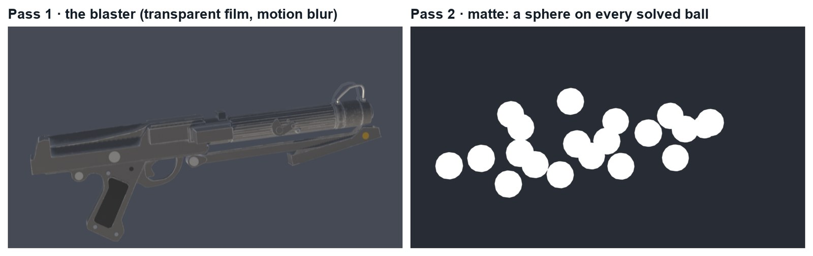
Real renders of frame 151: the blaster pass, and the matte pass with a sphere on every solved ball.
WHYWith a moving camera every frame’s background is different, so you cannot use one clean plate. Inpainting fills small holes from their surroundings, which is enough for small balls.
CHECKA composite where the tracking balls no longer read as balls.
FIXBlack holes remain? Raise the Inpaint Size. Smears too big? Shrink the matte so only the balls are covered.
WORKED EXAMPLE · DIFFERENT OBJECTThe demo grows the matte 5 px and inpaints at size 160.
STRETCH (AFTER THE CHECK PASSES)Roto her hands with a mask so the inpaint never touches them.
Method basis: B4 · K1. Values and sequence are authored for this project.
08
Composite the blaster and check the whole shot
IN SHORTAlpha Over; scrub start, turn, end; rank problems; fix the biggest; note the rest.
READ ALOUD
DOCUMENT: Blaster_YourName.blend · Compositing SELECT: The blaster pass over the inpainted plate TOOLS / ROUTE: Alpha Over · Viewer
Add the blaster pass and an Alpha Over node: Background = the inpainted plate, Foreground = the blaster.
Scrub the whole shot. Check the start (prop small), the turn (prop end-on) and the end (prop large).
Look for what gives it away: leftover prop parts, a hand that should be in front of the blaster, wrong brightness.
Fix the biggest problem first. Often that is brightness: adjust the Sun and World and re-render.
Write down what you could not fix and why.
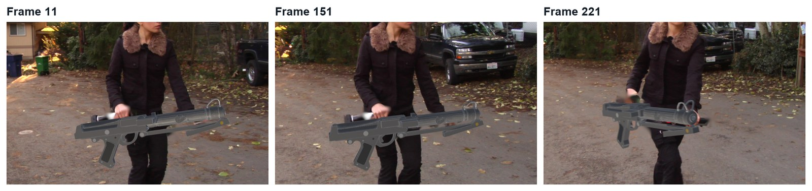
Three real frames from the finished demo. Look for the leftover red ball and bracket: fixing those is your stretch.
STEP CHECKLIST
GLOSSARY
Alpha Over: The node that places a foreground with transparency over a background
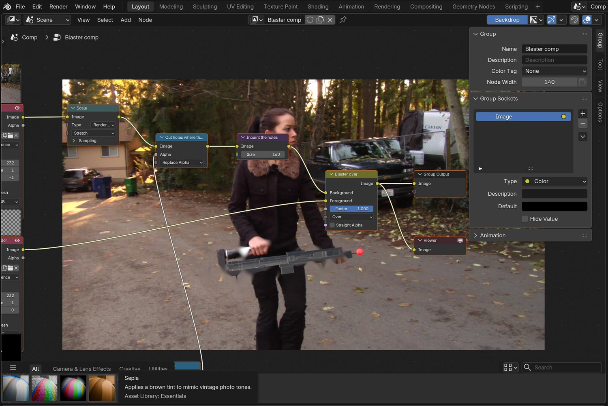
Real screenshot of the demo node tree: the plate has holes cut by the matte, the Inpaint node fills them, and the blaster goes over the top.
WHYNo composite is perfect. Professionals rank the problems and fix the ones the audience will notice.
CHECKA full-length composite, a list of remaining problems, and the biggest one fixed.
WORKED EXAMPLE · DIFFERENT OBJECTHonest notes on the demo: the red end ball, the left bracket and the handles are still visible, and her fingers are behind the blaster where they should wrap around it.
STRETCH (AFTER THE CHECK PASSES)Roto her front hand and place it over the blaster.
Method basis: K1. Values and sequence are authored for this project.
09
Practical check: the director’s change, then render and defend
IN SHORTRead the card; pick the stage; change a copy; render; defend; credit.
READ ALOUD
DOCUMENT: Your shot · the director’s card SELECT: Whatever the card requires TOOLS / ROUTE: Your own decisions
Read your director’s card (below).
Decide which stage it touches: tracking, model, render or composite. Change as little as possible.
Make the change in a copy of your file and render the shot (FFmpeg, H.264).
Screen it and explain one tracking choice and one compositing choice.
Credit the plate, the method and your model in your evidence.
Card
The director says
1 · Different prop
“Not a blaster. Give her something else to carry: your choice of model.”
2 · Charged
“The blaster is powered up: glowing lights along it and a soft glow on her jacket.”
3 · Clean hands
“I can see leftover prop. Remove the red end ball and the bracket.”
4 · Night
“Grade it to night, and the blaster’s lights are the brightest thing.”
Independent evidence: the main achievement evidence for this tutorial.
STEP CHECKLIST
GLOSSARY
Revision: A requested change to a shot
WHYA shot built in stages can be changed without starting again.
CHECKA changed shot that meets the card, rendered, with an explanation and credits.
FIXStuck? Name the stage the card touches first. (Independent step: the Coach can explain tools but not decide your changes.)
WORKED EXAMPLE · DIFFERENT OBJECTWorked example on a different shot: a “swap the prop” card only needed a new model parented to the same Empty.
STRETCH (AFTER THE CHECK PASSES)Take two cards at once.
Method basis: K1. Values and sequence are authored for this project.
Before you submit
Student QA.
Evidence conversation
Keep it short and specific.
SENTENCE FRAMESMy solve error was ___ after I ___. · I hid the balls by ___. · For the director’s card I changed the ___ stage using ___.
Figures marked Illustration are drawn, not screenshots. Step values are starting points authored for this project. Draft for teacher review; not yet classroom-piloted.